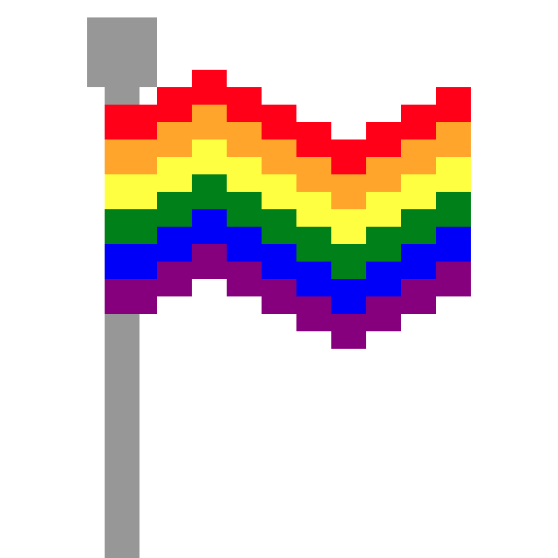
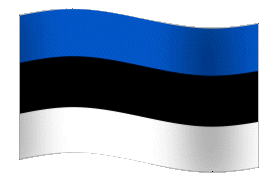

Hyperpop on muusikaliik, mis sai alguse Ühendkuningriigis 2010. aastate lõpus.
See muusikažanr on tuntud oma maksimalistliku ja liialdatud lähenemise poolest popmuusikale.
Hyperpopi artistid ühendavad popmuusika ja avangardistlikku tundlikkuse, kasutades elemente, mida leidub tavaliselt elektroonilises, hip-hopi ja tantsumuusikas.
Oluline märksõna veel selle žanri puhul on iroonia.
[1]
Hyperpopi iseloomustavad erksad süntesaatori meloodiad, autotune’iga töödeldud “kõrvussse jäävad” vokaalid ja liigne kompressioon ja moonutus. Sageli kasutatakse ka surrealistlikke või nostalgilisi viiteid 2000ndate internetikultuurile ja Web 2.0 ajastule. Tüüpilised tunnused hõlmavad tugevalt töödeldud vokaale; metallilisi, meloodilisi löökpille; helikõrgusega muudetud süntesaatoreid; kõrva jäävaid refrääne; lühikesi laulupikkusi; ja “läikivaid, armsaid esteetikaid”, mis on vastandatud ärevust tekitavate sõnadega.
Hyperpopi liikumine on tihedalt seotud LGBTQ+ veebikogukondadega ja paljud hyperpopi tuntuimatest loojatest on transsoolised, mittebinaarsed või geid.
Hyperpopi stseeni päritolu seostatakse enamasti briti muusiku A. G. Cooki plaadifirma ja kollektiivi PC Musicuga ja sellega seotud artistide, nagu Sophie ja Charli XCXiga. Kahjuks on Cook teatanud, et peale selle aasta lõppu lõpetab PC Music tegevuse.
Hyperpopil on ka seos Eestiga. Nimelt on kaks Eestist pärit artisti, Umru ja Tommy Cash, teinud tihedalt koostööd PC musicuga. Umru on pooleestlane, kes elab New-Yorkis. Ta on produtseerija ja ta on siiani PC musicu liige. Tommy Cash on varasemalt teinud koostööd nii A. G. Cooki, Umru kui ka Danny L Harlega, kes on ka PC Musicu liige. Cooki ja Harle poolt on vastavalt produtseeritud "Winaloto" ja "X-RAY".